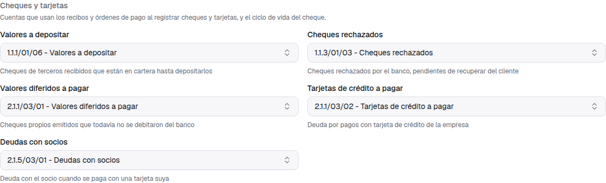
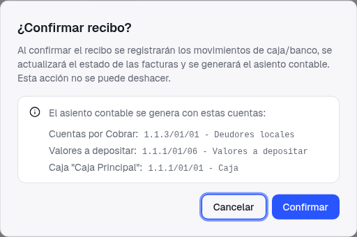
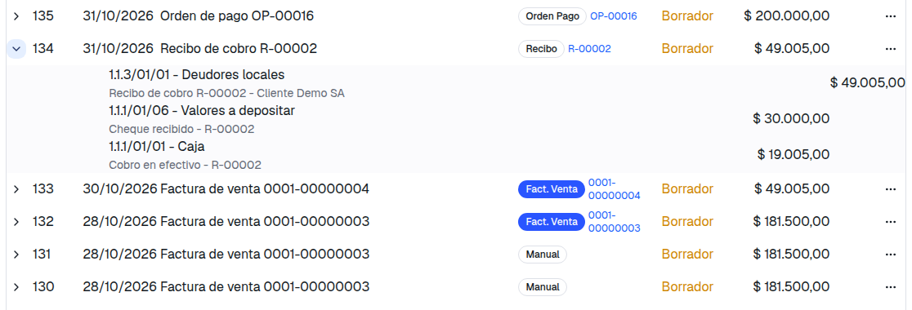
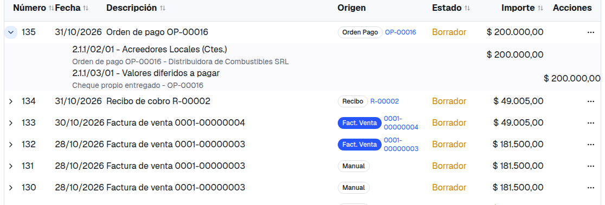
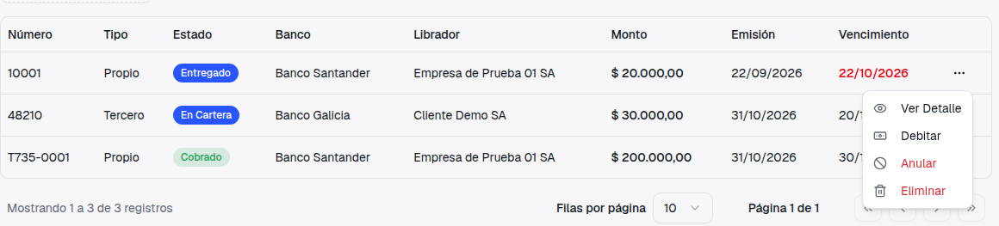
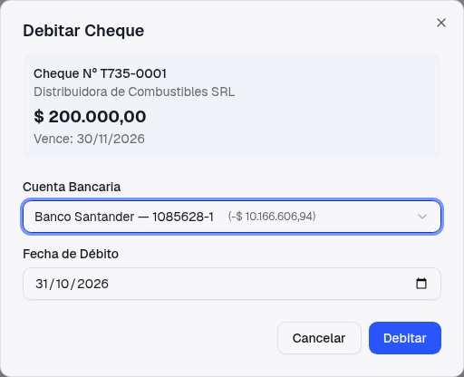
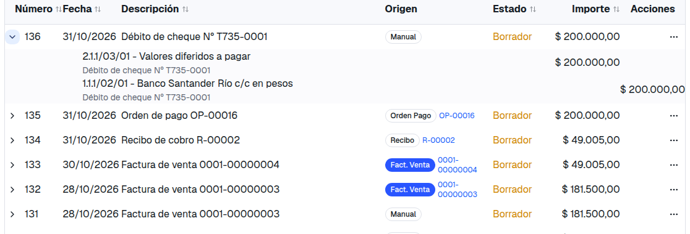
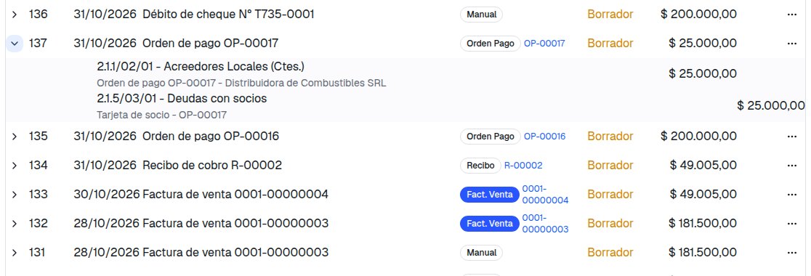
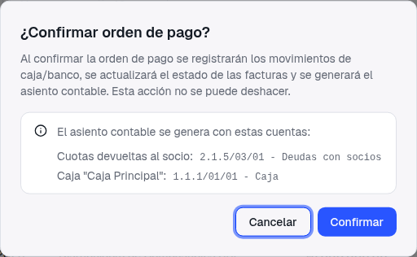
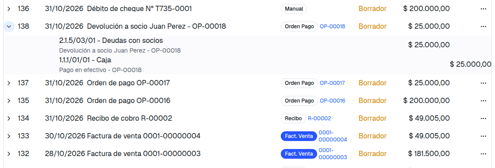

Guía de presentación: qué pedía el ticket, qué cambió y cómo se usa
Hasta ahora, un recibo cobrado con cheque, o una orden de pago pagada con cheque propio, cheque endosado o tarjeta, dejaba afuera ese pago del asiento y avisaba con un cartel naranja. El saldo de Deudores o de Proveedores quedaba abierto hasta regularizarlo a mano. Además, la devolución a un socio no generaba ningún asiento.
El pedido: que cada medio tenga su cuenta, que el asiento cierre por el total y que lo que ya quedó pendiente en el pasado quede regularizado o, al menos, listado para la contadora.
Cheque, e-cheq endosado, tarjeta y "Cuenta Corriente" quedaban fuera del asiento, con aviso. El importe seguía abierto en Deudores o Proveedores. Depositar, rechazar o anular un cheque no generaba asiento. La devolución a un socio, tampoco.
Cada medio tiene una cuenta y el asiento del recibo o la orden de pago cierra por el total, sin avisos. El ciclo del cheque (depositar, rechazar, debitar, anular) y la devolución a socios generan su propio asiento, siempre en borrador para que lo revise la contadora.
En Contabilidad → Configuración hay una sección nueva, Cheques y tarjetas, con cinco cuentas. Se eligen una sola vez, escribiendo el código o el nombre en el buscador.

| Cuenta | Tipo | Para qué sirve |
|---|---|---|
| Valores a depositar | Activo | Cheques de terceros que recibimos y todavía no depositamos |
| Cheques rechazados | Activo | Cheques que el banco rechazó y se le reclaman al cliente |
| Valores diferidos a pagar | Pasivo | Cheques propios entregados que todavía no se debitaron del banco |
| Tarjetas de crédito a pagar | Pasivo | Deuda por pagos con la tarjeta de crédito de la empresa |
| Deudas con socios | Pasivo | Lo que la empresa le debe a un socio cuando paga con una tarjeta suya |
El comprobante no se puede confirmar: el diálogo lo dice en rojo, nombra la cuenta y dónde cargarla. Solo se exige la cuenta del medio que se está usando.
La factura 0001-00000004 de Cliente Demo SA es de $ 49.005. El cliente paga con un cheque de $ 30.000 (Banco Galicia) y $ 19.005 en efectivo.


| Acción en Cheques | Qué pasa con el cheque | Asiento (Debe / Haber) |
|---|---|---|
| Depositar | En cartera → Depositado | Banco / Valores a depositar |
| Rechazar | Depositado → Rechazado | Cheques rechazados (a cuenta del cliente) / Banco |
| Debitar (nueva) | Cheque propio Entregado → Cobrado | Valores diferidos a pagar / Banco |
| Anular | Según el estado | Revierte lo que se había asentado |
| Acreditar | Depositado → Acreditado | Sin asiento: el banco ya se debitó al depositar |




Si la empresa paga a un proveedor con la tarjeta personal de un socio, la deuda pasa a Deudas con socios. Cuando la empresa le devuelve el dinero, esa deuda se cancela contra la caja o el banco: la devolución ahora genera su asiento.



Como medio de pago de recibos y órdenes de pago, Cuenta Corriente no representa un movimiento de fondos y era la causa de varios saldos abiertos. Ya no aparece en las listas y, si se intenta, el sistema responde: El medio "Cuenta Corriente" ya no se usa: elegí otro medio o registrá una nota de crédito/débito.
Los comprobantes viejos que la usan quedan como estaban. Si hay que corregir o editar uno de ellos, hay que cambiarle el medio.
Los cheques y cuotas de antes de este cambio no tienen cuenta registrada. El sistema los trata así:
Lo corre quien administra el servidor, una sola vez después de publicar el cambio (es de solo lectura: no modifica nada). Hay que indicar la fecha y hora de la publicación en horario UTC; la hora argentina se expresa tres horas más adelante. Por ejemplo, una publicación a las 15:30 en Argentina se informa como 18:30.
El resultado lista cada recibo u orden de pago confirmado antes de esa fecha, con el importe que quedó abierto, el cliente o proveedor y qué va a pasar con cada uno:
| Texto en la columna "destino" | Qué significa |
|---|---|
| se regulariza al endosar o depositar | Cheque recibido que sigue en cartera: se arregla solo al usarlo |
| se regulariza al debitar | Cheque propio entregado: se arregla al debitarlo |
| se regulariza al devolver al socio | Deuda con el socio por una tarjeta suya: se arregla al devolverle |
| e-cheq ya en banco: sin saldo abierto | Nada que hacer: el asiento viejo ya lo había mandado al banco |
| regularizar a mano | La contadora tiene que hacer un asiento (cheque ya depositado o endosado, tarjeta de la empresa, cobro con tarjeta) |
| cuenta corriente: regularizar con NC/ND | Se resuelve con una nota de crédito o de débito |
Al final trae los totales por cliente y proveedor, para ver cuánto hay que regularizar en cada cuenta.
Las cinco cuentas hay que configurarlas antes de usar cheques o tarjetas en comprobantes nuevos; si no, no se podrán confirmar hasta que estén.
Una devolución a socio no se puede pagar con "Cuenta Corriente". Y si hay una devolución vieja en borrador que la usaba, hay que cambiarle el medio antes de confirmarla.
Si el período contable está cerrado, la acción del cheque (depositar, rechazar, debitar, anular) no se hace y el mensaje lo explica.